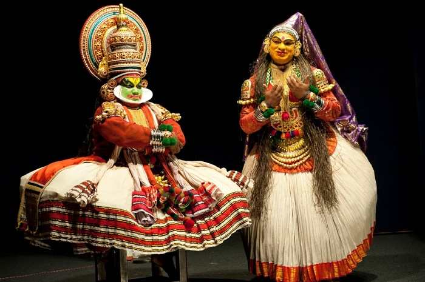
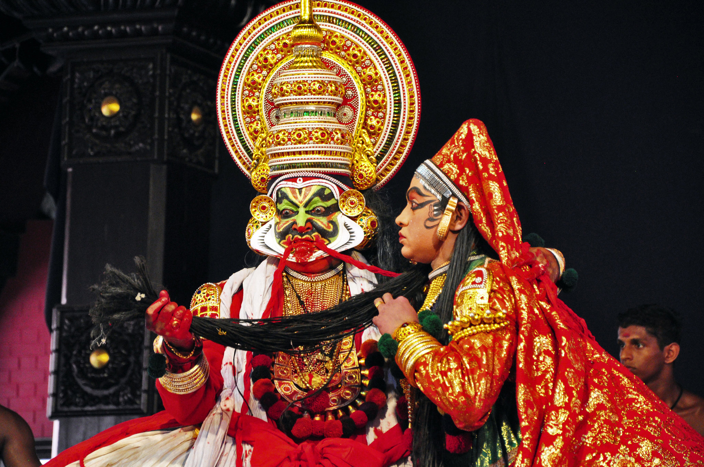
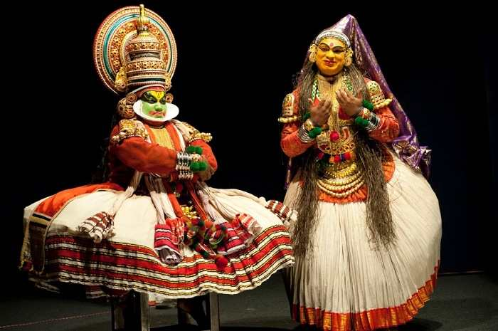
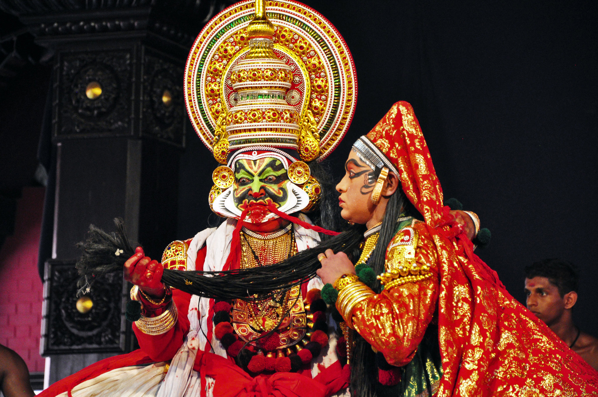

Introduction to Kathakali
Kathakali is a distinguished classical dance form that originates from Kerala in South India. Known for its elaborate costumes, intricate makeup, face masks, and vividly painted faces, it brings to life stories and characters from Hindu epics, particularly the Mahabharata and Ramayana. This dance form, notable for its dramatic and expressive power, combines dance, music, drama, and literature to create a unique aesthetic experience.
Historical Roots
Kathakali's origins trace back to the 17th century, emerging from older temple and folk arts traditions such as Krishnanattam, Kutiyattam, and religious dramas in Sanskrit. It was a spectacle for the court performances and a medium to narrate the stories from Hindu scriptures to the common people, making extensive use of dramatic gestures, detailed costumes, and ritualistic music. Over the centuries, it evolved in its technique and repertoire, shaped by the changing times but always adhering to its rigorous traditional standards.
Performance and Techniques
A typical Kathakali performance involves elaborate gestures known as 'Mudras' used to express the narrative in conjunction with facial expressions and synchronized movements. Performers undergo intense training with rigorous physical preparation that helps them to master the art of body control and expressions. Kathakali is also distinguished by its extensive make-up code, each color and design signifying the nature of the character portrayed, such as gods, kings, demons, and animals.
The performance is usually conducted at night and often goes on until dawn. The music of Kathakali features the sopanam style, which is sung and accompanied by instruments like the chenda, maddalam, and edakka. The stage settings are minimal, with the focus primarily on the performers who combine dance and acting to tell enduring stories.
Cultural Significance
Kathakali is more than just a dance form; it is a dynamic theatre experience that encapsulates the cultural and artistic traditions of Kerala. It serves not only as entertainment but also as a way to impart moral and ethical lessons from the epics. Today, while still steeped in tradition, Kathakali has embraced contemporary influences and is performed worldwide, symbolizing the rich cultural heritage of India and attracting enthusiasts from across the globe.
Explore Kathakali
 


